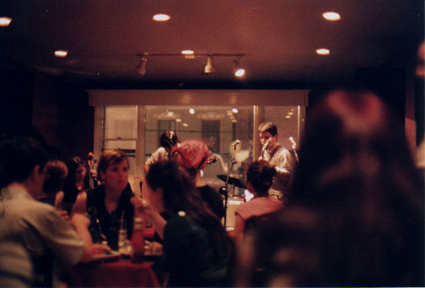
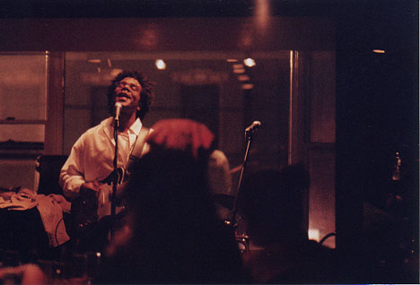
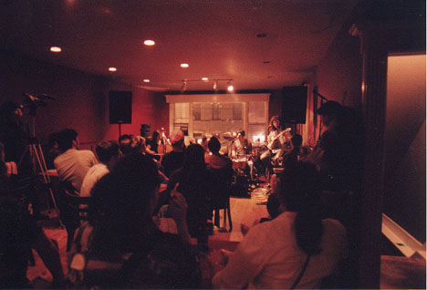

Big Orange Crayonmusical thingsKnotworking, The Brian Thomas Trio, and The Kamikaze Hearts The Larkin, Albany, NY July 7th, 2001 Pictures are finally at the bottom You know, I always thought I knew how to get to Lark Street. I mean I've been there a billion times, right? I've walked there, driven there, everything, but somehow when I try to get there from Troy instead of Schenectady, I end up going down every street-named-after-a-bird in Albany before I find Lark. Oopsie... I was so happy just to be able to go to this show; it always seemed that although there were lots of Kamikaze Hearts shows around, they were always 21+, so when I found out that the Larkin was making an exception this time I was ecstatic. Rightly so, as it turned out because this was really a fun show! This was the first time that Teresa and I managed to go to a show together, too, so yay! Of course, that's what made me get so very lost, but whatever. I mean, it's not like it's exceptionally difficult to get from Troy to Albany, but I've got the navigational skills of a dizzy caterpillar. Since we got there later than expected, we missed most of Knotworking's set, me more than Teresa because I realized that I left my camera in the car just as I was handing the guy at the door a one-dollar bill when the cover was three because I wasn't paying attention to what I was taking out of my wallet. Anyone who talked to me that night knew I was kind of out of it, too. I'm not sure why, though... Anyway, Knotworking. I ran to my car and back and really liked the three or so very pretty songs that I heard. I tried taking some pictures, but it's dark in there, so pretty much for the whole show I decided to enjoy it rather than trying to do impossible things with my camera. Bryan Thomas played next and did a very eclectic mix of punk, soul, blues, and, well, Ted Nugent. He started off by himself and was later accompanied by drums and bass, flying through forceful songs, romantic songs, impressively suggestive songs about drinking, and ending with a cover of "Wango Tango." He's definitely in his own category as far as musicians go. The Kamikaze Hearts played last and did a beautiful show as well. Matt introduced his banjo as his new girlfriend, and I giggled. Their songs were lovely all the way through, but they didn't take themselves seriously for a second, so you couldn't help but love them. I guess you could say they made a very good first impression, and next time I'm allowed to go to one of their shows I can only see myself liking them more. Pictures:  Knotworking  Bryan Thomas didn't escape the wrath of the print machine that doesn't know how to position frames!  The Kamikaze Hearts |